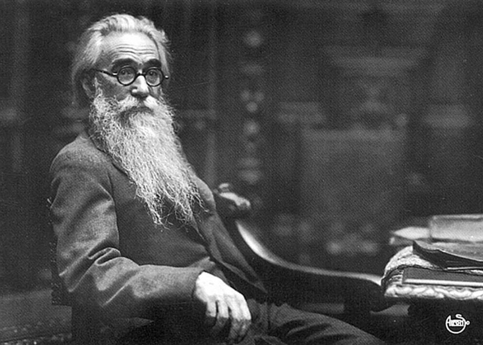
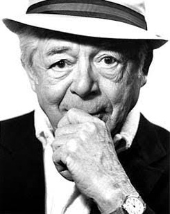
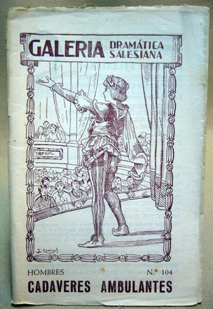

Sobre la comedia y otras emanaciones
Por Cristóbal Peláez González
Publicado por Festicine-Antioquia 2017
“Apenas Dios rió, nacieron siete dioses que gobernaron el mundo;
apenas se echó a reír, apareció la luz;
con la segunda carcajada apareció el agua;
y al séptimo día de su risa apareció el alma”.
Umberto Eco
“Lo cómico, para producir todo su efecto,
exige como una anestesia momentánea del corazón.
Se dirige a la inteligencia pura”.
Henri Bergson
“En las épocas en que estuve deprimido hice comedias.
Y cuando me sentía feliz, rodé temas más bien trágicos”.
Billy Wilder
Solemos denominar comedia y sus diversos derivados menores –sainete, farsa, entremés, astracanada– como un género dramático que se caracteriza por el tratamiento de una situación en la que los personajes involucrados se relacionan a partir de un conflicto no necesariamente fatal o catastrófico.
Los protagonistas representan, se ha dicho, a seres humanos promedio y arquetípicos, víctimas de sus vicios y defectos. Y es a través de su carácter –y muchas veces solo a causa de él– que se hunden en la dificultad y el error. Por eso allí la acción es secundaria; ya no es el fatum sino el enredo, la calumnia, el malentendido, la falta de comunicación, la picardía, el exceso, los que aparecen como nutrientes de un género que sabe utilizar toda suerte de estrategias para provocar la hilaridad: desde el ingenio del gag hasta las formas más contundentes de la exageración, la repetición y la distorsión.
Los tópicos más recurrentes de la comedia suelen tener su andamio en los siete pecados capitales, casi siempre en el contexto de una moral mendaz. Sus frutos más anhelados –por lo difícil que puede llegar ser provocarlos– son la risa y el escándalo. La necesaria risa como un elemento liberador, terapia de descarga de las tensiones del diario vivir y, a veces, una desatadura de las reglas de la moral.

Ramón María del Valle-Inclán, creador del esperpento como una estética basada en la deformación sistemática de la realidad, compuso a comienzos del siglo XX poderosas comedias con tinte trágico y contribuyó, de esta manera, a establecer la relación entre tragedia, drama y comedia, exponiendo como elemento determinante la manera en que el dramaturgo ofrecía su punto de vista.
Se autodenominaba “un escritor del aire” y lo explicaba así: los griegos escribían de rodillas, en actitud de inferioridad, admirados y sumisos ante personajes heroicos llenos de virtudes y atributos divinos. Los dramaturgos isabelinos escribían de pie, en condición de igualdad, a la misma altura de sus creaturas; así todo Shakespeare. Y él, Valle, narraba al modo de un demiurgo que escribía aéreo, observando desde arriba a una humanidad contrahecha, seres ridículos en su comportamiento. Un conglomerado de marionetas que giraban incapaces de entenderse inteligentemente. Lo que se proponía el autor era, sencillamente, hacer desfilar la literatura clásica, vale decir la “literatura seria”, por espejos cóncavos y convexos para extraer nuevas dimensiones fantásticas, dado que el exceso de realidad no nos permite entender el alma secreta de las cosas. El resultado tiene que ser necesariamente burlesco, bufo.
La comicidad de buena parte del llamado teatro del Absurdo, que emergió fuertemente contra el realismo imperante, parte de esa condición: una mirada cruel sobre una sociedad que utiliza el lenguaje, no para comunicarse, sino para ocultar sus más hondos secretos. Ya no hay héroes, ya no hay dioses. Lo que ha quedado sobre la joroba de la tierra es una vasta población de seres grotescos que van trenzando estúpidamente su propia aniquilación. “Nada más divertido que la desgracia”, escribió Beckett.
Si la tragedia fue desde sus inicios una institución democrática que procuró convocar al ciudadano a la catarsis y la empatía al mismo tiempo (avivar el horror hacia un comportamiento erróneo y, simultáneamente, llamar a la solidaridad humana), la comedia quiere situar al espectador en la lejanía o el distanciamiento, e instalar así una actitud crítica. Para ello, nada mejor que los mecanismos de la burla y la risa; predisponer al espectador a una actitud crítica sobre situaciones y personajes que giran como burros atados a la noria de sus defectos. Parece que ambos géneros se han puesto de acuerdo para redistribuirse las dos pulsiones en las que orbita la existencia humana: sexo y muerte.
Si la tragedia es la prolongación de una incertidumbre, la comedia propone la posibilidad de una catarsis más racional. Sitúa al espectador en la comodidad de contemplar el mundo desde afuera, donde su interior juega a no verse involucrado en lo que acontece. Nadie se siente Charlot, salvo en aquellas situaciones dramáticas.
Beckett exploró como nadie el vericueto de nuestras más profundas miserias. De ahí sus personajes terriblemente cómicos envueltos en la desventura y acostumbrados a la desgracia: la viven, la exhiben como algo natural e inevitable, y encuentran en ella una condición humana que parece prescindir de la vida normal. Como seres que se pavonean de su devenir, han quedado reducidos a un mundo alterno donde sobreviven con gallardía. Una bofetada en el rostro pretencioso del engreimiento burgués.
El autor irlandés que sabía abrevar en el clasicismo literario, ha creado unos personajes únicos y admirables. Especies de engendros mitad clochards, mitad dandis, que tienen algún conexo con el planetario humano que habita en las películas de Chaplin, Buster Keaton, Laurel y Hardy, y los hermanos Marx. Consta que el escritor era asiduo espectador de ese cine.
En Días felices, presentada como una tragedia optimista, una veterana mujer acompañada de su decrépito esposo, yace enterrada en la arena de una tierra devastada en lo que se supone el final del mundo. En lo irremediable de su situación, aún tiene palabras de humor para alentar su euforia. Contemplando la inmensidad de esa planicie arrasada, se inquiere: “¿Y si toda esta porquería volviera a reverdecer?”, como emulando las palabras de Kleist: “La gracia solo puede residir en el títere o en el dios mecánico, es decir, en aquellos seres que no tienen conciencia de sí mismos”.
La tragedia es la demostración, como lo planteaba Nietzsche, de que el hombre no ha logrado adaptarse al universo. La comedia vendría a decirnos que está tratando de adaptarse de malas maneras, ridículamente.

Una constelación de dramaturgos ha alcanzado las cimas de su óptima construcción. Entre los clásicos: Aristófanes, Plauto, Shakespeare, Cervantes y Molière. Como clásicos también son los irrepetibles pioneros del cine mudo y, más acá, Lubitsch, Howard Hawks y, por supuesto, el más grande de todos: Billy Wilder, a quien sus fervientes bautizaron con el nombre de Dios para dar a entender que con su genialidad había alcanzado el tope de la categoría cómica: “Arriba de Dios no vine nadie”.
Excepción hecha del gran comediógrafo capitalino Luis Enrique Osorio, nuestro entorno provinciano en Colombia tuvo más contacto con la radio y el cine, ajeno al teatro y carente de verdaderas compañías productoras de un repertorio universal que pudiera impulsar el surgimiento de dramaturgos y directores. Los géneros menores que originalmente fueron utilizados en Europa para las diversiones en los burgos, tuvieron un extraordinario auge en Colombia. Vodevil se le llamó en Francia; Paso, en España. Eran pequeñas comedias musicales y disparatadas, festivas y moralizantes, que a menudo se ofrecían en el Viejo Mundo como aderezo vulgar de recreo.
Se trataba de ñapas ensartadas en las grandes representaciones con fines administrativos: en los prólogos, mientras el público se acomodaba; en los entretiempos, para jolgorio de la galería mientras los cultos tomaban un aire; y en los cierres, para que los nobles pudieran salir sin mezclarse o confundirse con los pobres. Aderezo, salsa. De esta raíz gastronómica provienen justamente los graciosos nombres de sainete y entremés, que se difundieron en plenitud por la zona andina y el litoral Caribe, donde campesinos y aldeanos se soslayaban en representaciones improvisadas que llegaban a través de impresos ocasionales, trasmisiones orales y en convites familiares y vecinales para festejar algún suceso pueblerino, cuyo tema siempre era la sátira a las costumbres y la mofa a los políticos y gamonales.

Y aquí, finalmente, un apunte histórico del que poco se habla: el papel tan importante que cumple en la difusión del teatro y, más exactamente de lo cómico, el arrume impresionante de obras impresas y bastante difundidas en todos los colegios de vocación religiosa (todos los colegios en Colombia son de vocación religiosa) de la Galería Dramática Salesiana, un emprendimiento catequístico proselitista que parte de Italia en el siglo XVIII por inspiración del sacerdote Don Bosco, se perfecciona en la España catoliquera del siglo XIX, e inunda a Colombia de sainetes, dramas religiosos, loas, declamaciones.
En la infinita colección misionera facturada por algunos comediógrafos reconocidos, el grueso estaba compuesto por una legión de escribidores anónimos, adaptadores de oficio y negros, según el concepto folletinesco. Por contera y para nuestro regocijo, figuraban allí comedias de corte pagano. En ese registro, quién lo creyera, anidan partes de las células embrionarias de nuestro actual teatro colombiano, que goza de reconocimiento continental como un movimiento que presenta una fisonomía rebelde, crítica, plural.
Sobre la mítica Galería de los salesianos, copiamos apartes de unos apuntes graciosos de Enrique Viola: “A nosotros nos salen las cuentas por unos tres mil textos, tirando muy por lo bajo…Si comenzáramos a representar una por una sus producciones…aún quedarían juguetes, disparates y cuadros cuando el destino nos diera alcance”.
Yo poseo muchos de esos textos. Guardo esas rarezas, esos animales extinguidos; los releo, los acaricio, los siento como un recuerdo de abuelita. Por favor, desocupado lector, no me insista más: no los regalo, ni los presto, ni los vendo.